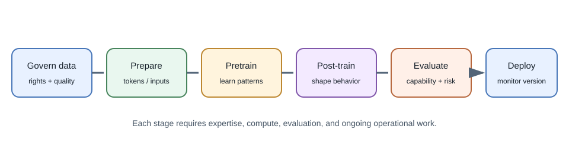
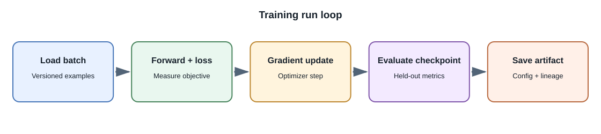

Training Models¶
Introduction¶
Training adjusts model parameters using data and an objective. Training a model from scratch starts with initialized parameters rather than a pretrained base. For a modern foundation model, this requires a large, carefully governed dataset, substantial compute, distributed training expertise, extensive evaluation, and ongoing operations.
Building an AI product does not require training a foundation model. Most full-stack developers use an existing model through a hosted API, run an available model locally, or fine-tune a base model for a narrow need.
Training stages in broad terms¶
- Data collection and governance: establish provenance, rights, consent, privacy handling, quality filters, and retention.
- Tokenization or input preparation: convert text, images, audio, or other data into model-compatible representations.
- Pretraining: optimize a broad objective over large data. Language models commonly learn to predict tokens from context.
- Post-training: adapt behavior using instruction examples, preferences, or other supervised and preference-based methods.
- Evaluation and red-teaming: test capabilities, limitations, robustness, safety, and policy requirements.
- Deployment and monitoring: serve inference, track drift and incidents, and update or retire the model as evidence requires.


This is a simplified map. Real training pipelines can have many more stages and specialized procedures.
Pretraining objective and data¶
An objective specifies what the training process optimizes. A next-token objective teaches a language model to predict the next token in training sequences. That objective does not directly guarantee factual accuracy, instruction following, or safe behavior; those properties depend on data, training stages, and evaluations.
Data quality, coverage, duplication, licensing, representation, and contamination all matter. Removing personal or copyrighted content can involve legal and technical questions that depend on jurisdiction and use. Document decisions and obtain appropriate expert review rather than assuming data is permitted because it is publicly reachable.
Post-training and alignment¶
A pretrained next-token model is commonly adapted into a more useful assistant through one or more post-training stages. Instruction fine-tuning uses examples of requests and desired responses. Preference methods compare candidate outputs or optimize against preference data. Reinforcement learning from human feedback (RLHF) is one family of approaches that uses human preference signals in an optimization process; other techniques, including direct preference optimization, use different training objectives.
These stages shape behavior according to the examples and objective. They do not guarantee that the model follows every instruction, refuses every unsafe request, or gives factual answers. Test capabilities and failure modes independently from the training objective.
Training on domain-specific material¶
When an organization says it wants to "train an LLM on its data," clarify the desired result:
- To make a model more familiar with domain language and patterns, a team may consider continued pretraining on permitted domain text.
- To make it follow a repeatable task format, supervised fine-tuning on curated examples may be relevant.
- To prefer certain kinds of responses, preference-based post-training may be considered.
- To answer questions from a changing document collection with traceable sources, retrieval-augmented generation is usually the more direct application pattern.
These are not interchangeable. Training changes learned parameters and requires data preparation, compute, evaluation, and lifecycle management. Retrieval selects source content at request time and can apply user-level permissions, but requires a secure, current retrieval system. Neither approach makes an answer automatically correct. See Fine-Tuning for a comparison of the training options and their limitations.
Training signals and losses¶
A loss is a numeric objective used to guide parameter updates. For a next-token language model, cross-entropy loss penalizes assigning low probability to the observed next token in training data. Perplexity is derived from average token loss and can compare language-model prediction on compatible data, but it does not directly measure user usefulness, truth, safety, or reasoning.
Training pipelines often process data in batches over many steps. Very large jobs distribute work across accelerators and must manage gradient communication, checkpointing, numerical precision, and recovery from hardware or network failures.
Compute and infrastructure¶
Large training jobs may use multiple accelerators and distributed systems. Teams manage throughput, network communication, storage, checkpoints, numerical stability, failures, and reproducibility. The final model also requires an inference system with capacity planning, safety controls, and monitoring.
Training cost is not only the accelerator bill. It includes data preparation, engineering, evaluation, energy, storage, deployment, incident response, and ongoing model maintenance.
Common scaling strategies include data parallelism, where workers process different batches and synchronize updates; tensor or model parallelism, where layers or matrix operations are split across devices; and pipeline parallelism, where different model stages run on different workers. Distributed strategies introduce communication overhead and failure modes, so they are not automatically faster for small experiments.
When training from scratch might make sense¶
Potential reasons include research into new architectures or objectives, a domain with uniquely valuable and legally usable data, or strategic needs that cannot be met through available models. Even then, teams often compare against pretrained or open-weight baselines first.
For an individual full-stack developer, a useful learning exercise is to train a small model or fine-tune a small open-weight model on a permitted toy dataset. This teaches the pipeline without claiming to reproduce a production-scale foundation model.
Options for developers¶
| Goal | Practical approach |
|---|---|
| Add chat or summarization | Hosted inference API or a local pretrained model |
| Keep experimentation on a laptop | Small model with a compatible local runner |
| Search a changing document library | Embeddings and RAG |
| Make output style or task behavior more consistent | Prompt evaluation first, then consider fine-tuning |
| Learn training concepts | Train a small model on a public, suitable educational dataset |
| Build a new frontier-scale model | Requires an organization, research expertise, major compute, data governance, and safety process |
Developer perspective¶
Treat model training and application engineering as related but distinct disciplines. A full-stack product can create real value through secure APIs, retrieval, user experience, evaluation, and workflow design without owning the base model.
Common misconceptions¶
- Training a model from scratch is not the same as calling a model API.
- Fine-tuning is not the same as pretraining.
- Training loss alone does not measure product usefulness or safety.
- A model trained on public web data is not automatically licensed for every downstream use.